Control de Inventario, Punto de Venta (POS), Facturación SII, Balanza Digital, Libreta de Fiados y Adaptabilidad Multi-Rubro
Edición Integral 2026 — Guía Exhaustiva de Operación para Cajeros, Encargados de Bodega y Administradores de Local
MANUAL_DE_USUARIO_MARKET_ALMACEN.html y en formato imprimible de alta resolución en MANUAL_DE_USUARIO_MARKET_ALMACEN.pdf. Para una consulta rápida durante el turno de mostrador, consulte la GUIA_RAPIDA_RESUMEN_MARKET_ALMACEN.md.1. CAPÍTULO 1: Introducción al Sistema, Filosofía Operativa y Roles en el Local (Cajero, Bodega, Administrador del Local)
2. CAPÍTULO 2: Terminal Punto de Venta (POS), Venta Rápida, Balanza Digital y Venta al Peso
3. CAPÍTULO 3: Venta de Carnes a Granel y Productos Congelados Pesados/Sellados con Etiqueta
4. CAPÍTULO 4: Modo Liquidación, Precios Rebajados y Generador de Packs / Promociones
5. CAPÍTULO 5: Pantalla de Cobro (Checkout), Medios de Pago e Impresión Térmica Automática 80mm/58mm
6. CAPÍTULO 6: Facturación Electrónica SII (Empresas con Giro y Razón Social)
7. CAPÍTULO 7: Libreta de Fiados & Cuentas de Vecinos (Compras con Boleta, Ver Cuentas, Aumento/Disminución de Cupo y Control de Sobrecupo)
8. CAPÍTULO 8: Arqueo de Caja y Cierre Z por Turno Multicaja
9. CAPÍTULO 9: Historial de Ventas, Auditoría de Documentos, Anulaciones y Menú de Informes
10. CAPÍTULO 10: Gestión de Inventario, Catálogo de Productos, Códigos de Barra y Kardex
11. CAPÍTULO 11: Guías de Despacho, Recepción de Mercadería y Compras a Proveedores
12. CAPÍTULO 12: Control de Mermas, Vencimientos y Pérdidas de Stock
13. CAPÍTULO 13: Toma de Inventario Físico en Tiempo Real y Respaldos en Excel
14. CAPÍTULO 14: Adaptabilidad Multi-Rubro: Casos Prácticos y Ejemplos de Configuración
15. CAPÍTULO 15: Instrucciones para Instalar y Ejecutar la Aplicación en Diferentes Dispositivos (Penúltimo Capítulo Obligatorio)
16. CAPÍTULO 16: Ventajas y Desventajas de Usar la Aplicación (Último Capítulo Obligatorio)
Market Almacén ha sido diseñado para erradicar las fallas críticas de los sistemas tradicionales de venta en el comercio minorista chileno: caídas por falta de internet, cobros mensuales abusivos, desorden en las libretas de fiados de papel y lentitud en los momentos de mayor afluencia de público.
El sistema funciona bajo el paradigma Offline-First, almacenando la información localmente en el dispositivo mediante una base de datos indexada ultrarrápida. Las operaciones de venta, pesaje en balanza, control de caja y registro de deudas se ejecutan en milisegundos, sin depender de servidores externos ni de conexiones remotas.
La aplicación cuenta con niveles de acceso adaptados a la jerarquía operativa de cualquier negocio:
* Acceso directo a la pantalla de ventas (POS), búsqueda de productos, balanza digital y lector de códigos de barra.
* Emisión de Boletas Electrónicas, Facturas a empresas y Tickets internos.
* Consulta y cobro a clientes registrados en la Libreta de Fiados según el cupo permitido.
* Consulta de su propio arqueo y cierre de turno.
* Registro de recepción de mercadería con guías de despacho o facturas de proveedores.
* Control de fechas de vencimiento, clasificación de productos por vencer y registro de mermas/averías.
* Ensamblado y generación de packs promocionales con descuento automático de insumos.
* Realización de tomas de inventario físico y conteo ciego en pasillos o góndolas.
* Control total de la tienda: creación y edición de productos, fijación de precios normales y de liquidación.
* Autorización exclusiva de líneas de crédito en la Libreta de Fiados (aumento, disminución, bloqueo y sobrecupos).
* Arqueo global de todas las cajas (Cierre Z consolidado).
* Solicitud y carga de folios tributarios (CAF) ante el SII.
* Exportación de respaldos contables a Excel y gestión de personal de turno.
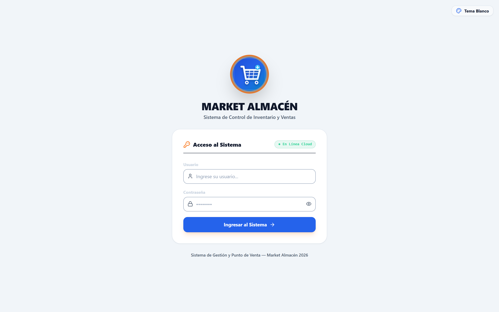
Figura 1.1: Pantalla de inicio de sesión con selección de usuario y clave de acceso.
El punto de venta está optimizado para pantallas táctiles y teclado rápido:
Figura 2.1: Interfaz general del Terminal Punto de Venta (POS) optimizado para alta afluencia.
Para negocios que comercializan productos al gramaje (frutas, verduras, frutos secos, quesos al corte, fiambres):
1. Presione el botón [ Venta por Peso / Granel ].
2. Seleccione el producto del catálogo (ej: Tomate Larga Vida, Manzana Royal Gala, Queso Gauda Laminado).
3. Elija un preset táctil rápido (250g, 500g, 1.000g) o ingrese el peso exacto que marca la balanza (ej: 735 gramos).
4. El sistema calcula en milisegundos el precio proporcional exacto y lo envía al carrito.
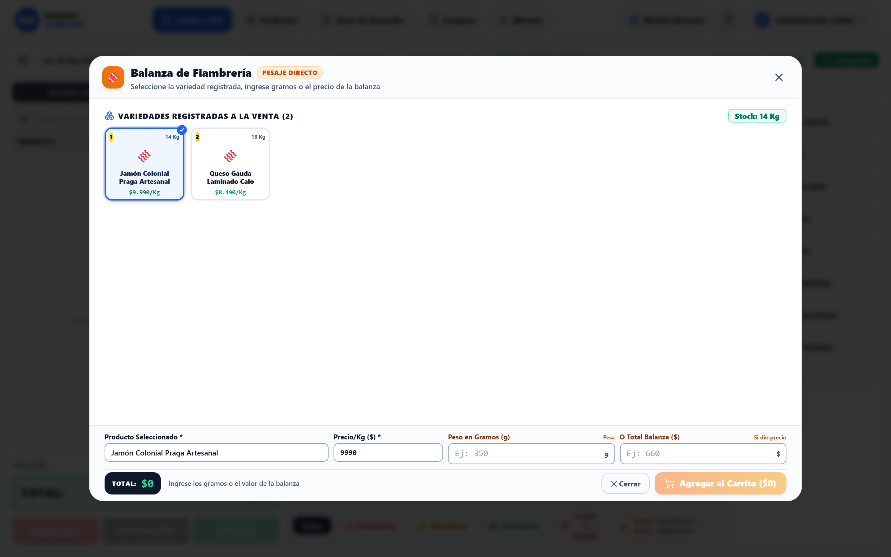
Figura 2.2: Modal de pesaje digital con presets de gramaje y cálculo automático sin scroll externo.
Si un cliente solicita 12 unidades de leche o 24 tarros de conserva, el cajero no necesita escanear 24 veces ni tocar 24 veces la pantalla:
1. Toque el número de cantidad del ítem en el carrito lateral.
2. Se abrirá el modal táctil "Anotar Cantidad Solicitada".
3. Digite 24 en el teclado numérico integrado y presione Enter o Aceptar. El carrito actualiza el subtotal al instante.
Figura 2.3: Modal táctil de edición directa de cantidad solicitada en el carrito.
En carnicerías, fiambrerías y minimarkets con sección de carnes frescas, los clientes solicitan cortes recién pesados frente a ellos:
1. Presione el botón inferior [ Carne a Granel ].
2. El sistema filtra de forma estricta los productos del rubro cárnico (Posta Negra, Lomo Vetado, Pechuga de Pollo deshuesada, Costillar de Cerdo).
3. Ingrese los gramos exactos cortados en el mesón (ej: 1.240 gramos).
4. Presione [ Agregar Carne al Carrito ]. El ítem se agrega detallando el peso exacto y el precio por kilo correspondiente.
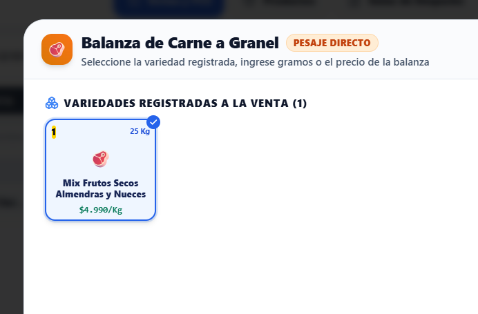
Figura 3.1: Modal especializado de pesaje para carnes a granel (vacuno, cerdo, pollo y embutidos).
En el menú lateral de categorías, la opción Congelados agrupa:
Para productos con sobrestock o próximos a vencer, el comercio puede fijar un Precio de Liquidación:
1. Al escanear o seleccionar un producto marcado en liquidación, el cajero puede conmutar entre cobrar el Precio Normal o el Precio Liquidación.
2. Al presionar el botón superior [ Liquidar ], se abre el panel de control de ofertas vigentes en el local.
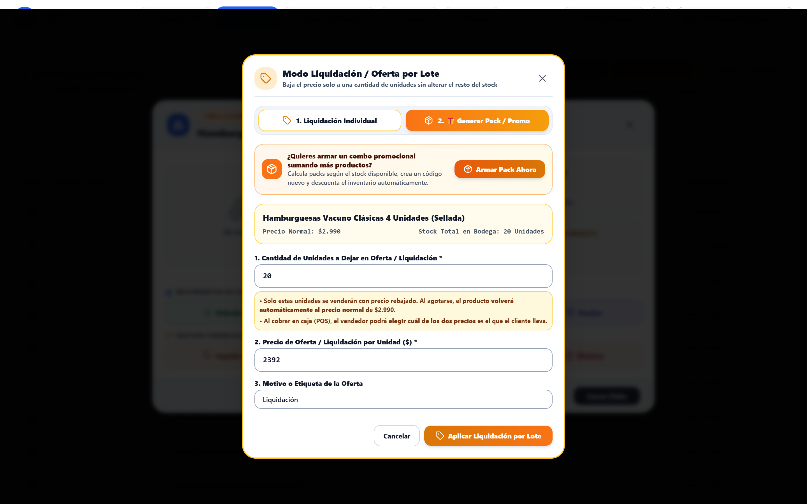
Figura 4.1: Panel de gestión de productos en liquidación y conmutación de precio en mostrador.
Dentro del modal de Liquidación, presione [ Generar Packs de Productos ] para crear combos y promociones comerciales:
Botillería:* Pack Promo Pisco 750ml + Bebida Cola 1.5L + Bolsa de Hielo.
Almacén / Desayuno:* Pack Once (1/2 kg Pan + Mantequilla 125g + Cecina Jamonada 100g).
Pet Shop:* Pack Cachorro (Alimento 3kg + Plato comedero + Juguete mordedor).
Packs / Promociones del punto de venta.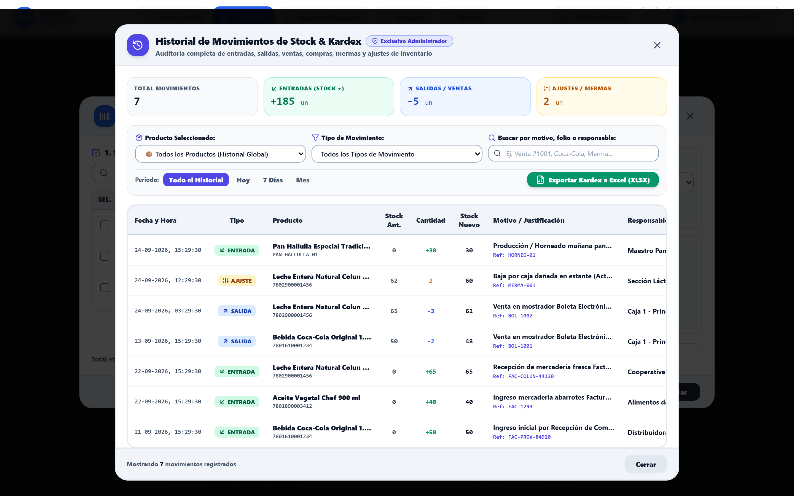
Figura 4.2: Submenú de generación de packs con descuento automático de materias primas e insumos.
Al presionar el botón verde [ COBRAR / FINALIZAR VENTA (F4) ], se despliega la pantalla de pago:
Figura 5.1: Pantalla de Checkout con cálculo de vuelto, ley de redondeo y pestañas de pago.
El sistema cuenta con un motor de impresión térmica directa sin abrir ventanas emergentes del navegador:
1. En el menú superior o de configuración, abra [ Configurar Impresora Térmica ].
2. Seleccione el ancho de papel de su gaveta: 80mm (estándar de supermercado) o 58mm (impresoras portátiles bluetooth/USB).
3. Active la casilla Imprimir Automáticamente al Cobrar.
4. Al confirmar la venta, la boleta o ticket se despacha inmediatamente a la impresora sin interrumpir el ritmo del cajero.
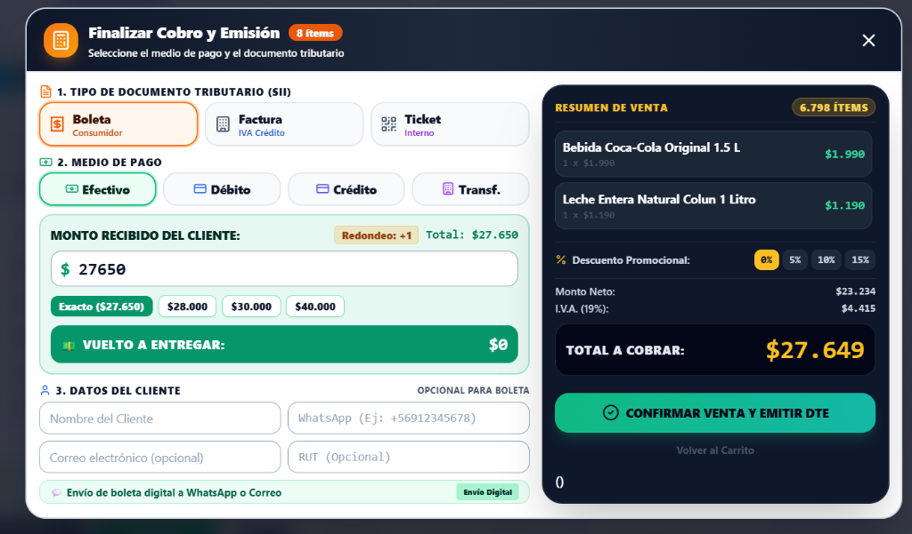
Figura 5.2: Modal de configuración de impresora térmica POS con auto-impresión silenciosa.
Es fundamental comprender la arquitectura del sistema:
1. En la cabecera de la pantalla de cobro, presione el botón azul [ Factura ].
2. Digite el RUT de la empresa compradora. Si ya ha comprado previamente, el sistema autocompleta su Razón Social, Giro y Correo.
3. Si es un cliente nuevo, presione [ + Crear Cliente Factura ], ingrese los datos tributarios una sola vez y quedará registrado para siempre en la base de datos empresarial del local.
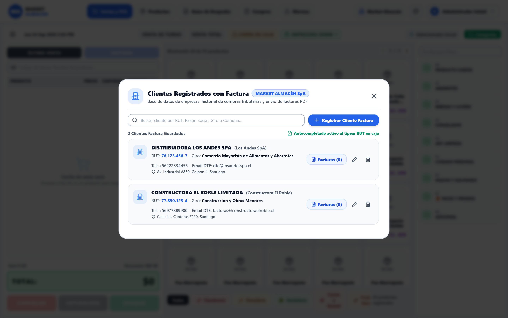
Figura 6.1: Directorio y registro de clientes con Factura Electrónica y datos comerciales SII.
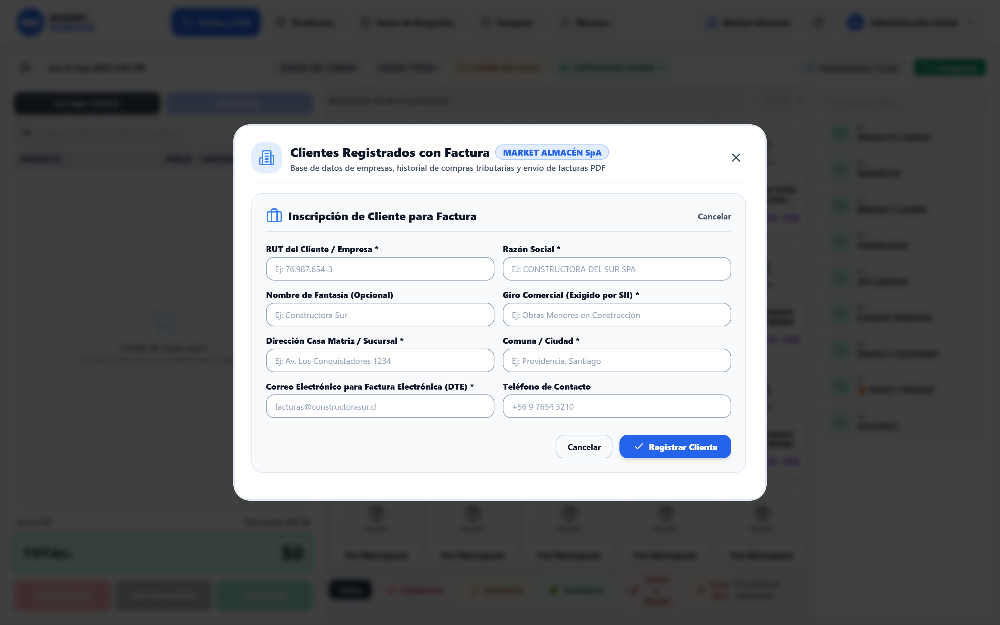
Figura 6.2: Modal de creación de nuevo cliente empresa para emisión de Facturas Electrónicas.
En el menú de administración del local, presione [ Libreta de Fiados & Cuentas ]:
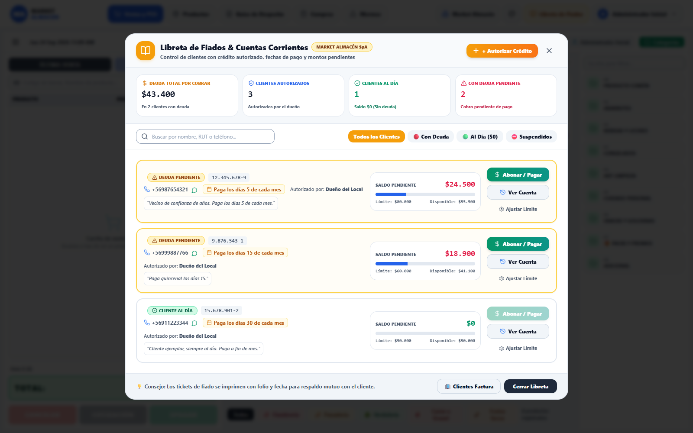
Figura 7.1: Directorio de la Libreta de Fiados con deuda actual, cupo y estado de pago de los vecinos.
Cuando un vecino compra a fiado en la pantalla de cobro:
1. El cajero selecciona la pestaña Crédito / Fiado.
2. El sistema cambia automáticamente el documento a Boleta Electrónica.
3. El cajero busca al vecino por nombre, apodo o teléfono.
4. Si la compra está dentro del cupo disponible, se aprueba inmediatamente.
5. Si la compra excede el cupo disponible (finalTotal > availableCredit), el sistema despliega el Selector de Decisión de Sobrecupo:
* ⛔ Opción 1: No Vender Pasando el Cupo (Por defecto): El botón de cobro se bloquea. El vecino debe pagar la diferencia en efectivo/tarjeta o retirar productos.
* ⚠️ Opción 2: Seguir Dando Fiado (Autorizar Sobrecupo Continuo): Se autoriza la venta con sobrecupo y la cuenta del cliente continúa abierta para futuras compras.
* 🛑 Opción 3: Última Venta Permitida (Sobrecupo de Excepción y Bloqueo): Se permite llevar los productos en esta compra, pero la cuenta del vecino queda inmediatamente BLOQUEADA para futuros fiados con una nota en su ficha hasta que salde su deuda.
* ⚡ Opción 4: Aumentar Cupo en Caja: Permite subir el cupo permanente del vecino ahí mismo sin salirse de la venta.
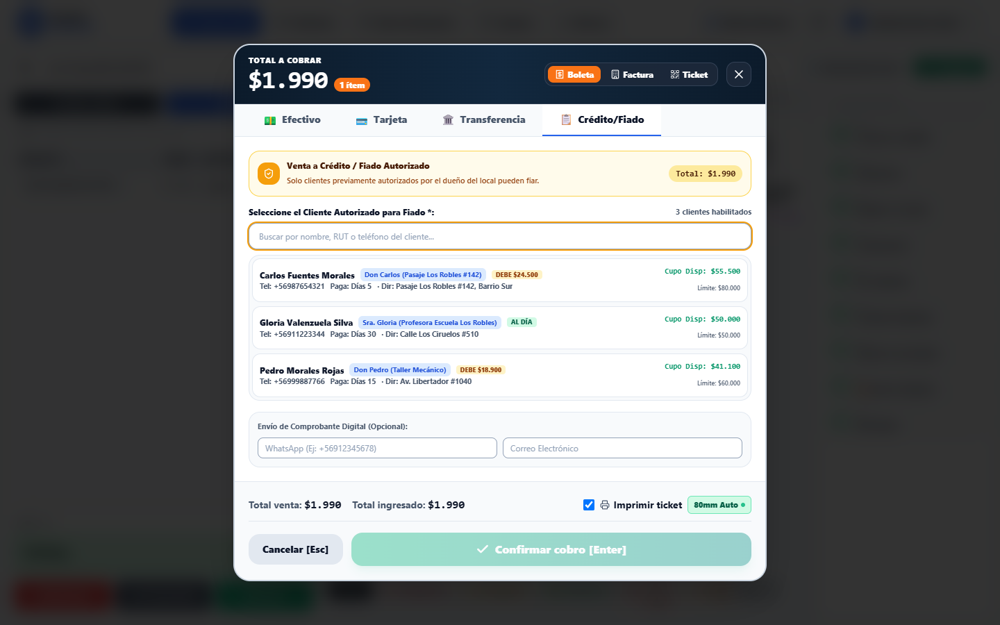
Figura 7.2: Pantalla de cobro a Fiado en POS con selección de cliente y alertas de cupo.
Al presionar el botón [ Ver Cuenta ] de cualquier cliente en la Libreta de Fiados:
* Muestra la Deuda Actual, Cupo Disponible y Cupo Autorizado.
* Permite aumentar o disminuir el cupo según la situación de cada cliente mediante botones táctiles rápidos (-$20.000, -$10.000, -$5.000, +$5.000, +$10.000, +$20.000, +$50.000) o ingresando el monto directamente.
* Permite modificar el día de pago pactado del mes y guardar con confirmación inmediata.
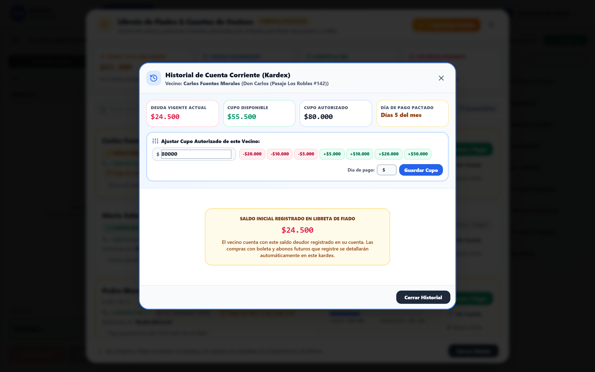
Figura 7.3: Historial Kardex de cuenta corriente del vecino con panel interactivo de aumento y disminución de cupo.
Cuando el cliente se acerca al local a pagar su cuenta:
1. En la Libreta de Fiados presione [ Abonar / Pagar ].
2. Elija Pago Total (saldar el 100% de la deuda) o Abono Parcial ingresando el monto que entrega.
3. Seleccione la forma de pago (Efectivo, Débito o Transferencia).
4. El sistema descuenta la deuda al instante y emite automáticamente el Comprobante Térmico de Abono en 80mm/58mm con saldo anterior, monto pagado y nuevo saldo restante.
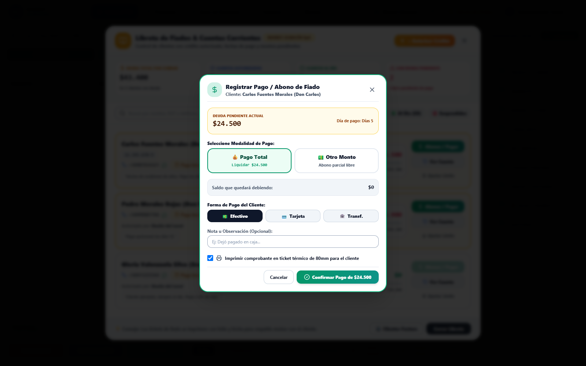
Figura 7.4: Modal de registro de abono o pago total con emisión de comprobante térmico.
Al término del turno del cajero o al finalizar la jornada comercial:
1. En la barra superior del terminal POS presione [ Cierre (Z) ].
2. El sistema genera el resumen financiero consolidado:
* Total Efectivo recaudado (desglosado con redondeo de ley).
* Total Tarjeta Débito y Crédito.
* Total Transferencias electrónicas confirmadas.
* Total Ventas a Fiado cargadas a cuentas corrientes de vecinos.
* Total Abonos de fiados recibidos en efectivo en el turno.
3. Presione [ Imprimir Cierre Z ] para obtener el comprobante de auditoría que se guarda junto al dinero en el sobre de recaudación.
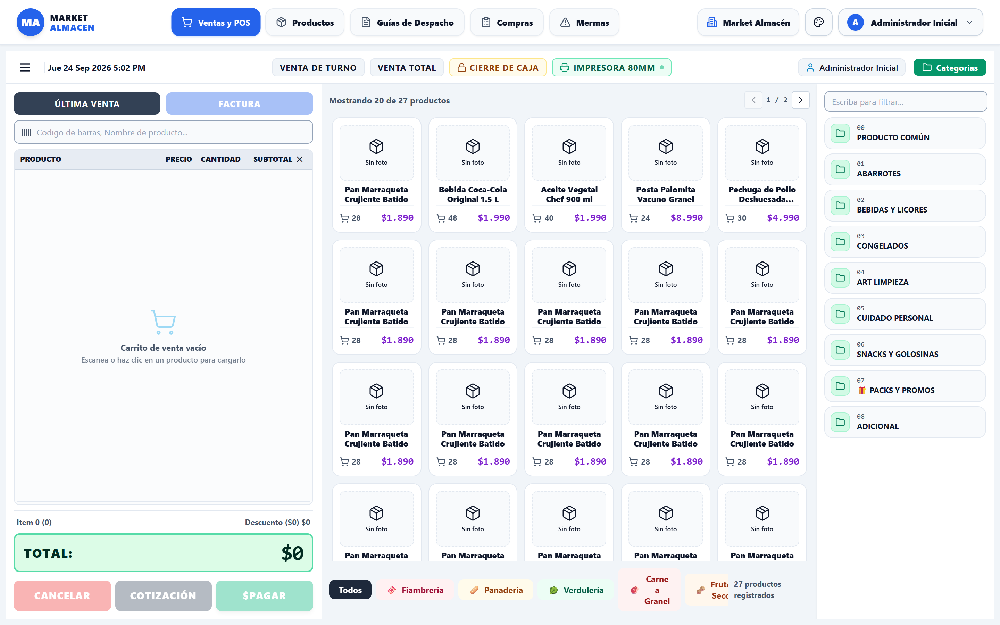
Figura 8.1: Comprobante de Arqueo y Cierre Z Multicaja con desglose por medio de pago.
En el menú superior [ Historial de Ventas ]:
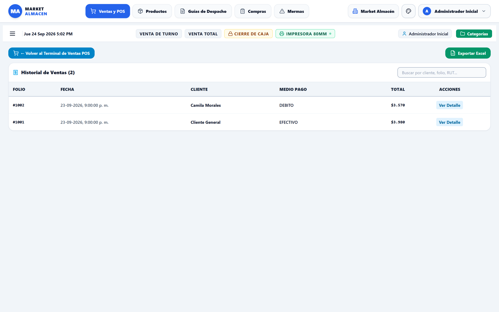
Figura 9.1: Historial vertical de ventas con tarjetas interactivas y métricas superiores.
Figura 9.2: Modal de opciones de documento: reimpresión, visualización y anulación con nota de crédito.
Presione [ Menú de Informes ] para generar reportes ejecutivos en PDF de ventas por día, por vendedor, por categoría o por medio de pago, ideales para el contador o la revisión mensual del negocio.
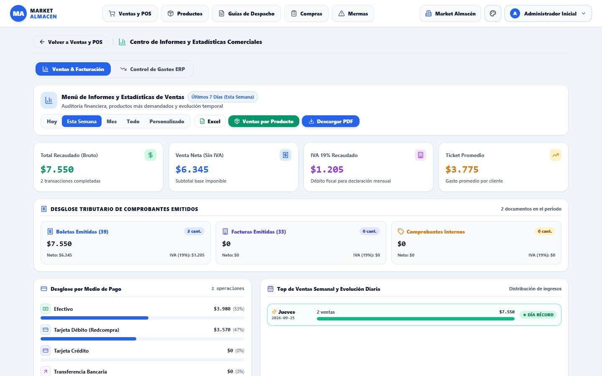
Figura 9.3: Reporte contable de ventas consolidado en PDF con formato profesional.
En el menú [ Productos / Inventario ]:
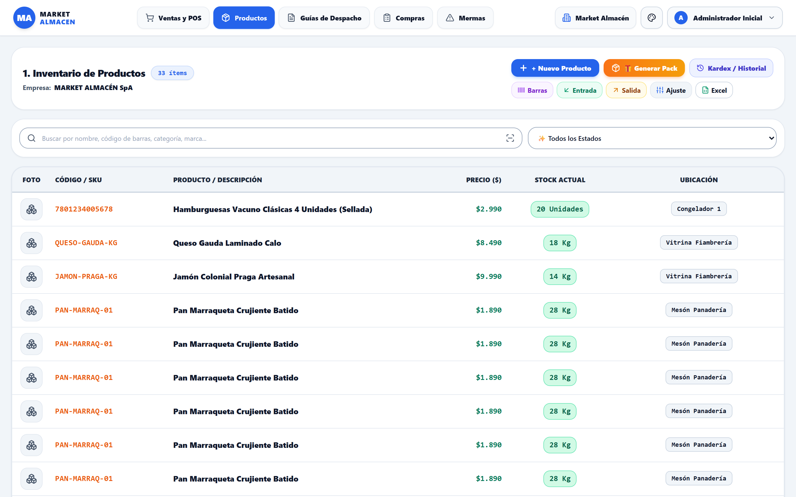
Figura 10.1: Catálogo de productos con indicadores de stock crítico, costos y precios de venta.
Dentro de la ficha de cualquier producto, presione [ Ver Kardex de Movimientos ]:
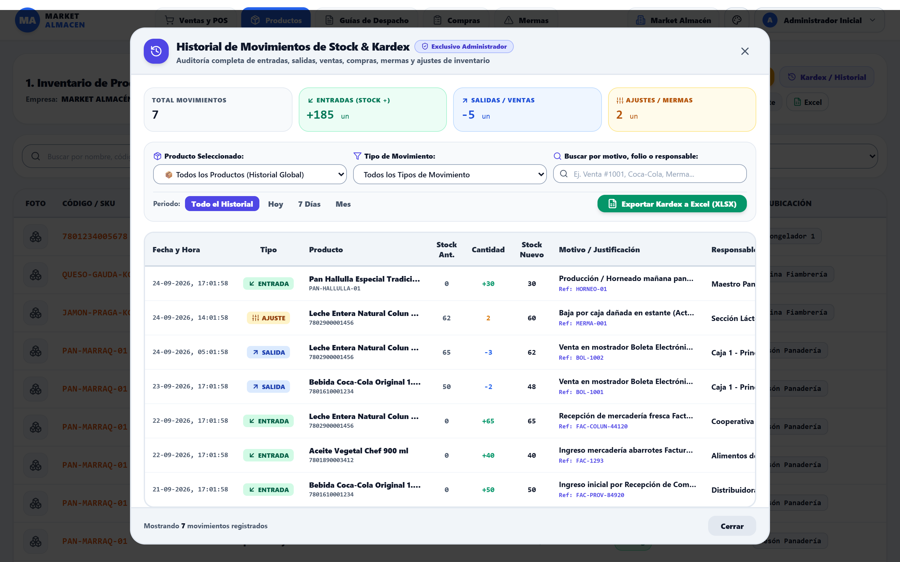
Figura 10.2: Kardex detallado de movimientos de entrada, salida y saldo de un producto específico.
En [ Imprimir Códigos de Barra ]:
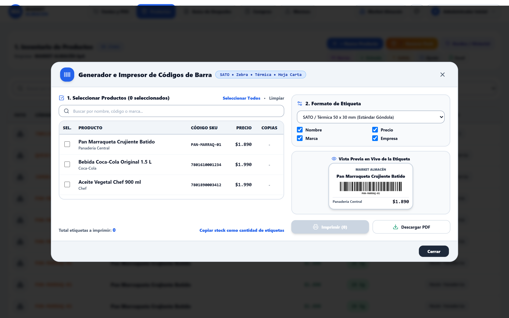
Figura 10.3: Módulo de generación e impresión de etiquetas de código de barras para estanterías.
Cuando el camión de distribución llega con el pedido:
1. Abra el módulo [ Guías de Despacho ] y seleccione la pestaña Recepciones.
2. Presione [ + Nueva Recepción ], ingrese el RUT del proveedor, número de guía o factura de compra.
3. Agregue los productos recibidos y las cantidades físicas ingresadas.
4. Al confirmar la recepción, el inventario se incrementa de forma automática en el sistema y se registra la entrada en el Kardex.
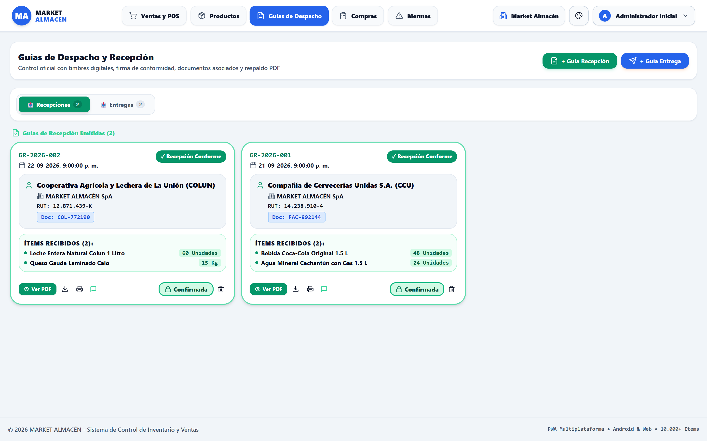
Figura 11.1: Módulo de control de guías de despacho y recepción de mercadería de proveedores.
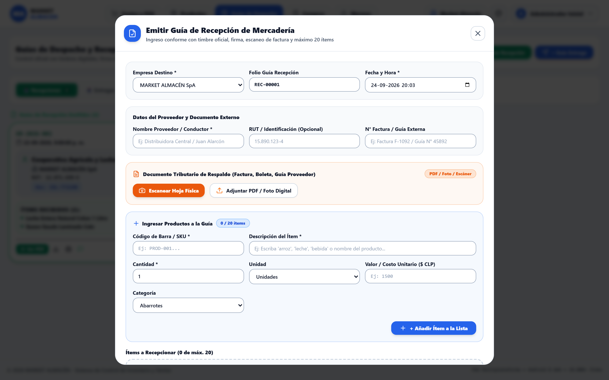
Figura 11.2: Formulario de ingreso de mercadería con validación de cantidades y costos de compra.
En el módulo [ Compras ], el administrador puede generar órdenes de compra oficiales con los productos con stock bajo para enviar directamente por WhatsApp o correo al proveedor.
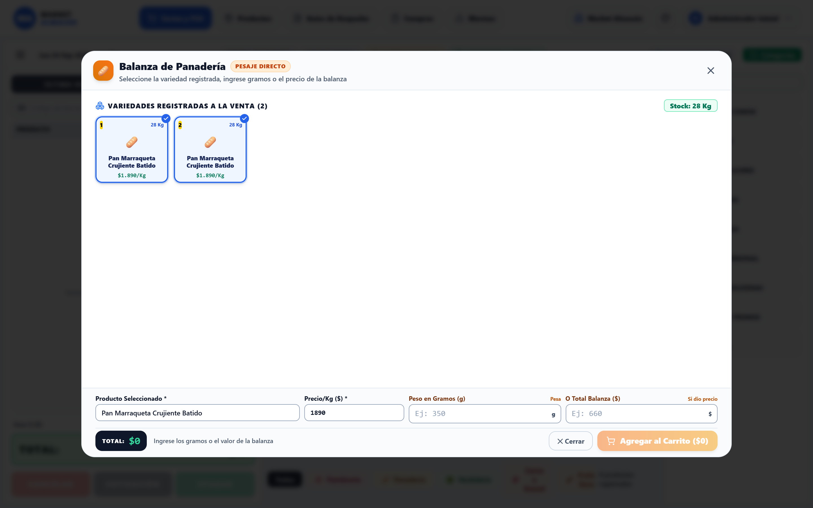
Figura 11.3: Panel de órdenes de compra a proveedores con cálculo de reposición sugerida.
En el módulo [ Control de Mermas ]:
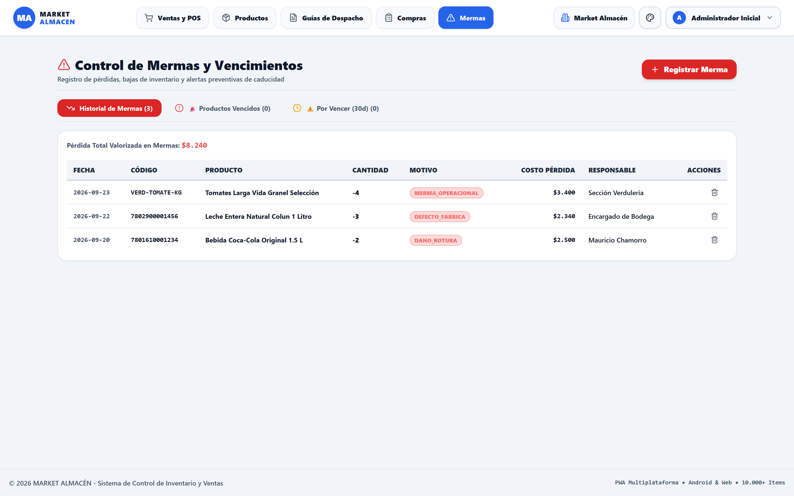
Figura 12.1: Panel central de control de mermas y desmedros de inventario.
El sistema monitorea las fechas de vencimiento registradas en cada lote y clasifica los productos en:
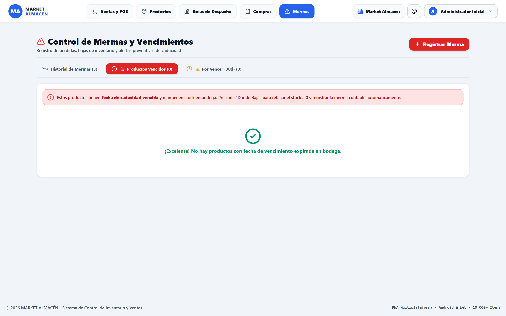
Figura 12.2: Listado de auditoría de productos vencidos con opción de baja inmediata de inventario.
Para cuadrar las existencias teóricas del sistema contra lo que realmente hay en las repisas:
1. Abra [ Toma de Inventario ] desde una tablet o computador portátil.
2. Escanee los productos pasillo por pasillo e ingrese la cantidad física contada.
3. El sistema realiza una consolidación comparativa: resalta sobrantes en verde y faltantes en rojo.
4. El administrador puede revisar el informe de diferencias y presionar [ Sobrescribir Inventario ] para actualizar el stock real en un solo paso.
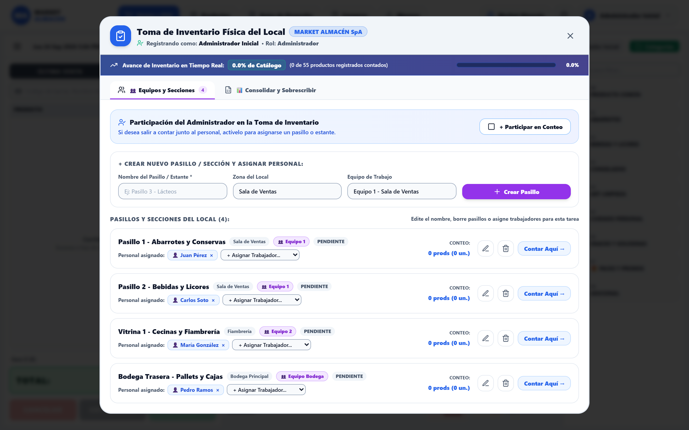
Figura 13.1: Pantalla de conteo físico en pasillo con lector de código de barras para toma de inventario.
En [ Respaldo & Exportación ], descargue copias completas de su base de datos en formato Excel (.xlsx): Catálogo con costos y precios, Clientes con Factura, Libreta de Fiados y Registro de Ventas para salvaguardar su información.
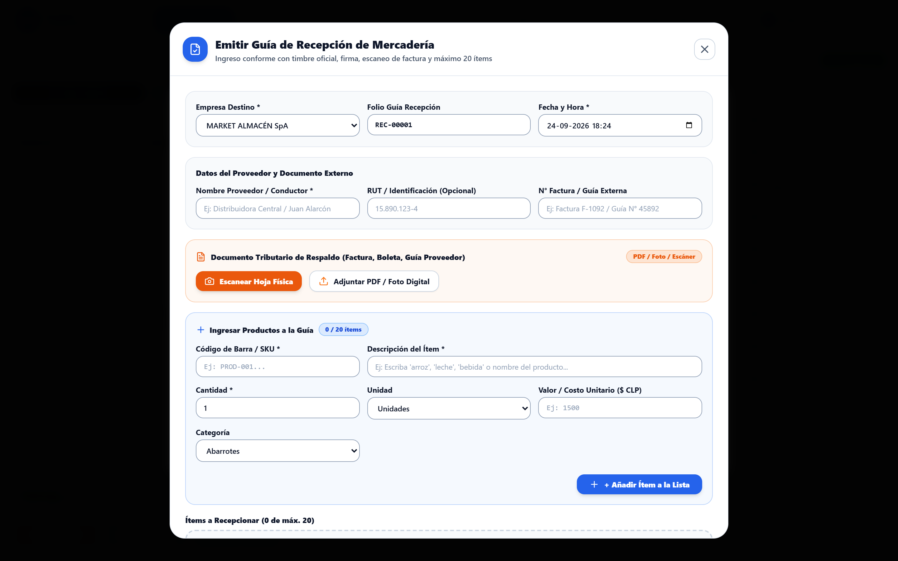
Figura 13.2: Módulo de respaldo y exportación de inventario y cuentas a planillas Excel.
Market Almacén se adapta dinámicamente a las necesidades comerciales específicas de diferentes negocios con un solo clic:
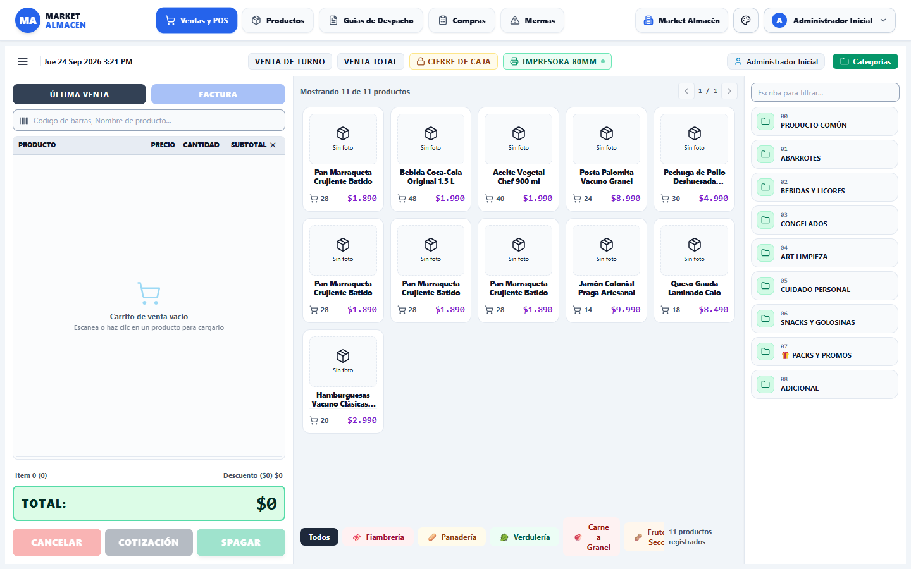
Figura 14.1: Selector de giro y rubro comercial que adapta terminología, balanza e impuestos del negocio.
| Rubro Comercial | Funcionalidades Clave Utilizadas | Ejemplo Práctico de Operación |
|---|---|---|
| Almacén / Minimarket | Botonera de 9 favoritos, Boletas, Libreta de Fiados de vecinos. | Venta express de pan y cecinas; registro de compra a Don Carlos a fiado hasta el día 5 de su sueldo. |
| Carnicería / Fiambrería | Balanza digital de Carne a Granel, Categoría Congelados sellados. | Pesaje al corte de Posta Negra (1.250g) en el mesón; escaneo directo de cortes congelados al vacío con etiqueta. |
| Botillería / Licorería | Generador de Packs / Promociones, control estricto de caja Z. | Creación de Pack 'Promo Terremoto' o 'Promo Piscola' descontando destilado y gaseosa automáticamente; arqueo nocturno. |
| Panadería / Pastelería | Pesaje de pan por kilo en balanza, Liquidación fin de jornada. | Presets de 500g y 1kg de Hallulla; activación de modo liquidación con 40% de descuento en pasteles después de las 20:00 hrs. |
| Verdulería / Frutería | Venta al peso con presets de gramaje, Control de mermas por maduración. | Pesaje rápido de tomates y plátanos; pase a merma de fruta sobremadurada para mantener el costo real. |
| Ferretería de Barrio | Libreta de Fiados para maestros, códigos de barra adhesivos. | Línea de crédito a maestros contratistas que pagan al terminar la obra; etiquetas adhesivas en tornillos a granel. |
| Pet Shop / Veterinaria | Alimento a granel por kilo, Packs de accesorios. | Venta de 2.5 kg de alimento para perro en bolsa pesada; Pack 'Bienvenida Cachorro' (Comedero + Alimento + Juguete). |
(Penúltimo Capítulo Obligatorio)
Market Almacén es una aplicación multiplataforma de vanguardia construida con tecnología web progresiva (PWA) y encapsulada nativamente en Android con Capacitor. Puede ejecutarse en una amplia gama de dispositivos comerciales:
1. Acceso Web: Abra Google Chrome, Microsoft Edge o Brave e ingrese a la dirección URL local o al enlace de despliegue web de su local.
2. Instalación como Aplicación de Escritorio (PWA):
* En la barra de direcciones del navegador, haga clic en el ícono de Instalar Aplicación (ícono de monitor con flecha).
* La aplicación se instalará como un programa de escritorio independiente con su propio ícono en el Escritorio y Barra de Tareas.
* Se ejecuta a pantalla completa, sin barras de navegación del explorador, ofreciendo máxima velocidad y ergonomía al cajero.
3. Impresoras y Balanzas USB: Conecte su lector de código de barras USB y su impresora térmica de 80mm/58mm. Windows los reconocerá automáticamente como dispositivos Plug & Play.
Para propietarios o administradores que deseen revisar stock, ventas o registrar fiados desde su teléfono celular:
1. Copie el archivo instalador app-debug.apk (o Market-Almacen.apk) a la memoria de su teléfono celular (vía WhatsApp, correo o cable USB).
2. Abra el Administrador de Archivos de su teléfono y toque el archivo APK.
3. Si el sistema muestra la advertencia de seguridad, seleccione Permitir instalar aplicaciones de orígenes desconocidos en los Ajustes de su teléfono.
4. Presione Instalar. Al finalizar, la aplicación quedará lista con su ícono en la pantalla de inicio.
5. Abre y funciona 100% de forma autónoma sin requerir servidores externos.
Ideal para puntos de venta minimalistas de mostrador o para realizar tomas de inventario físico caminando por el almacén:
1. Instale el archivo APK en su Tablet Android (Samsung Galaxy Tab, Lenovo Tab, Xiaomi Pad, etc.).
2. En la configuración de pantalla de la Tablet, active la rotación horizontal (Modo Paisaje).
3. Conecte un lector de código de barras bluetooth o conéctelo vía adaptador USB OTG.
4. Puede montar la tablet en un pedestal de mostrador giratorio junto a una gaveta de dinero eléctrica.
Terminales comerciales profesionales (marcas Sunmi V2/T2, PAX, Nexgo, Morefun) que integran pantalla táctil, procesador Android e impresora térmica incorporada:
1. Conecte el terminal POS a su red Wi-Fi o mediante cable USB al computador.
2. Transfiera e instale el archivo app-debug.apk.
3. En la configuración de Market Almacén, seleccione el ancho de papel térmico incorporado (58mm en terminales de mano o 80mm en terminales de mesón).
4. El sistema disparará los tickets y boletas directamente a través de la guillotina térmica incorporada del equipo, ofreciendo una solución de caja compacta y 100% móvil.
(Último Capítulo Obligatorio)
Para una toma de decisiones informada por parte del comerciante o dueño del negocio, a continuación se presenta un análisis técnico y operativo transparente de las ventajas y desventajas del sistema:
1. Autonomía Total Offline-First:
* La aplicación almacena sus datos en el dispositivo. Si se corta el suministro de internet en el barrio o falla la señal telefónica, el local puede seguir vendiendo, emitiendo comprobantes y cobrando sin interrupciones.
2. Cero Cobros Mensuales ni Comisiones:
* A diferencia de los sistemas de suscripción en la nube (SaaS) que cobran mensualidades crecientes o porcentajes por transacción, Market Almacén es propiedad del comerciante, reduciendo los costos fijos a cero.
3. Velocidad Extrema en Hora Punta:
* Las búsquedas en catálogo y el procesamiento del carrito se resuelven en milisegundos gracias a la base de datos indexada local. No existen tiempos de espera de carga web ("cargando datos...").
4. Control Inteligente de Fiados con Boleta:
* Resuelve el desorden de los cuadernos de papel permitiendo fijar cupos precisos, días de pago del mes, historial kardex de abonos con ticket térmico y toma de decisiones ante sobrecupos (bloquear, autorizar continuo o autorizar como última venta).
5. Separación Tributaria Rigurosa:
* Separa estrictamente la Facturación a empresas de las Boletas y Fiados a vecinos, evitando contingencias fiscales ante el Servicio de Impuestos Internos (SII).
6. Generador de Packs con Descuento Real de Stock:
* Permite armar promociones sin descuadrar el inventario de las materias primas individuales.
7. Impresión Térmica Silenciosa:
* No abre ventanas emergentes del sistema operativo que distraen o traban la atención en caja.
1. Responsabilidad del Respaldo de Datos en el Usuario:
* Al residir la base de datos de forma local en el dispositivo del local, si el equipo sufre un daño físico catastrófico (ej: derrame de líquidos, robo del equipo o daño de disco duro), los datos podrían perderse si el administrador no realiza respaldos periódicos en Excel o JSON en un pendrive o correo.
2. Sin Sincronización Multi-Sucursal Automática por Defecto:
* En la modalidad autónoma local, cada caja o terminal opera con su propia base de datos independiente. Si el negocio cuenta con múltiples sucursales en distintas ciudades, se requiere conectar el módulo de backend unificado en la nube para consolidar inventarios inter-tiendas.
3. Dependencia de la Calidad del Hardware de Caja:
* Si se utiliza un computador muy antiguo con poca memoria RAM o navegadores desactualizados, la fluidez visual de las animaciones puede verse reducida respecto a terminales modernos.
4. Curva de Aprendizaje Inicial en Personal No Habituado a Balanza Digital:
* En locales con personal de edad avanzada acostumbrado exclusivamente al cuaderno y a la calculadora manual, se requiere una capacitación inicial de 1 a 2 turnos para dominar los atajos de teclado y la selección de gramajes.
Manual Oficial de Operación Market Almacén — Versión Integral 2026. Todos los derechos reservados.